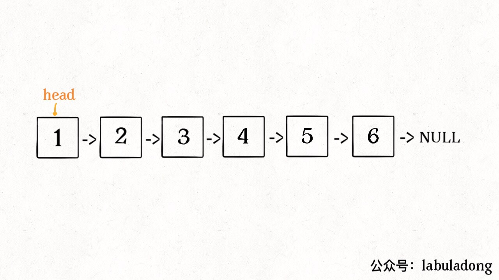
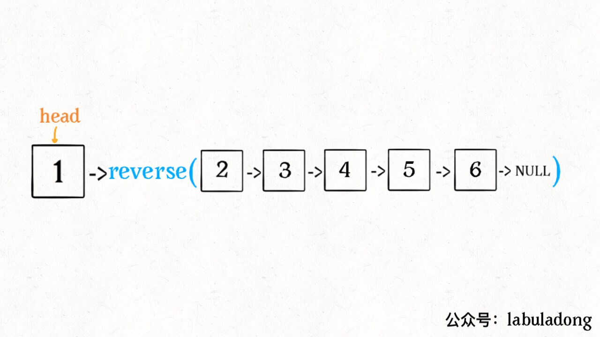
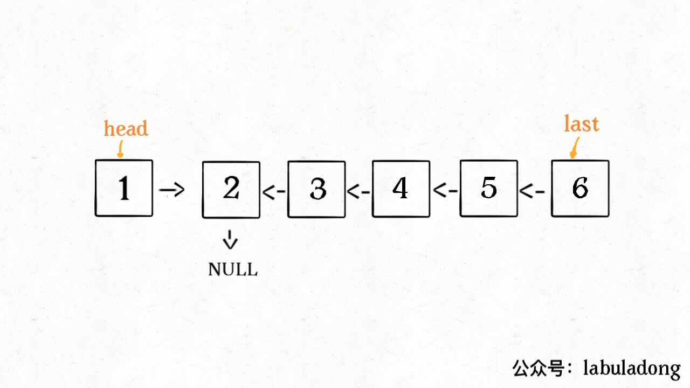
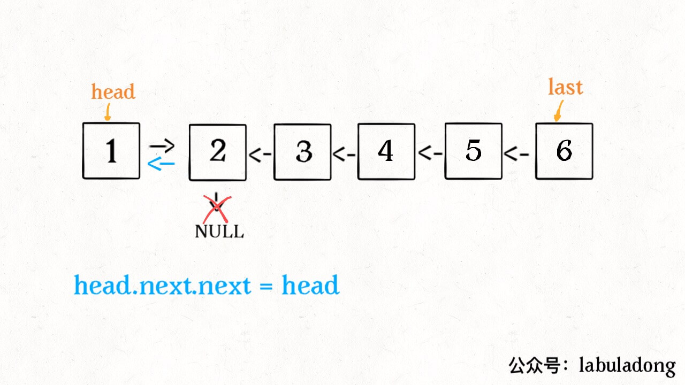
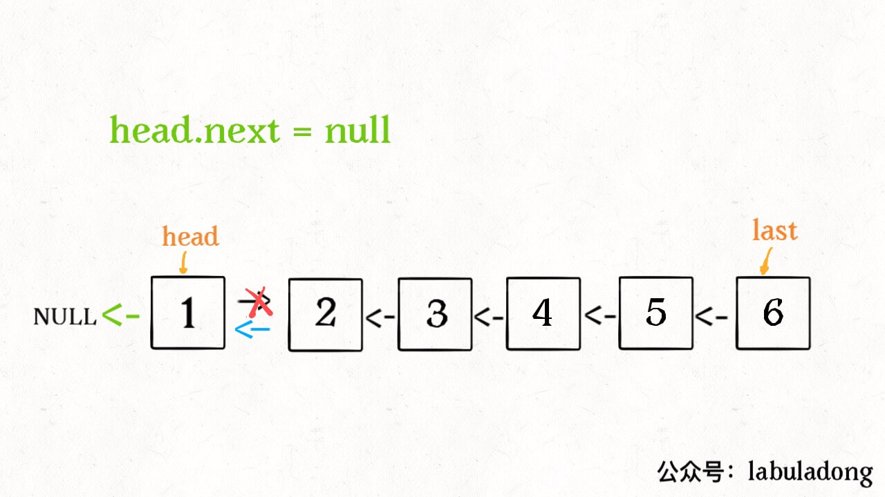
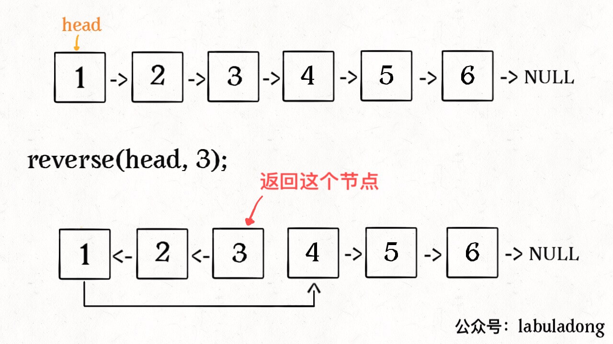
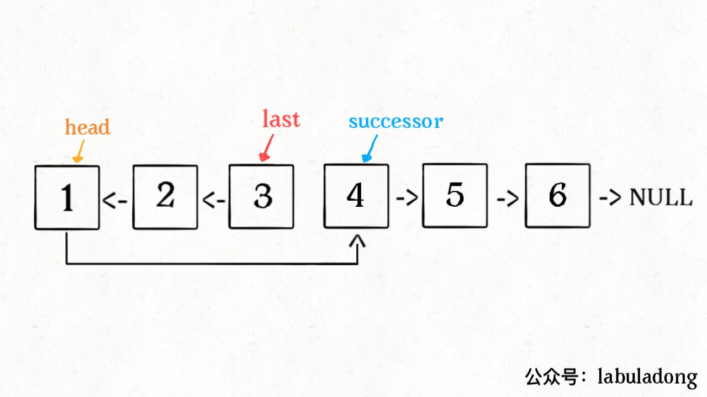

链表
递归反转链表的一部分
递归反转整个链表
1 | ListNode reverse(ListNode head) { |
具体来说，我们的 reverse 函数定义是这样的：
输入一个节点 head**，将「以 head 为起点」的链表反转，并返回反转之后的头结点**。
明白了函数的定义，在来看这个问题。比如说我们想反转这个链表：

那么输入reverse(head)后，会在这里进行递归：
1 | ListNode last = reverse(head.next); |
不要跳进递归（你的脑袋能压几个栈呀？），而是要根据刚才的函数定义，来弄清楚这段代码会产生什么结果：

这个 reverse(head.next) 执行完成后，整个链表就成了这样：

并且根据函数定义，reverse 函数会返回反转之后的头结点，我们用变量 last 接收了。
现在再来看下面的代码：
1 | head.next.next = head; |

接下来：
1 | head.next = null; |

神不神奇，这样整个链表就反转过来了！
反转链表的前N个结点

解决思路与反转整个链表差不多，只要稍加修改即可：
1 | ListNode successor = null; // 后驱节点 |

反转链表的一部分
1 | ListNode reverseBetween(ListNode head, int m, int n) { |
总结
递归的思想相对迭代思想，稍微有点难以理解，处理的技巧是：不要跳进递归，而是利用明确的定义来实现算法逻辑。
处理看起来比较困难的问题，可以尝试化整为零，把一些简单的解法进行修改，解决困难的问题。
值得一提的是，递归操作链表并不高效。和迭代解法相比，虽然时间复杂度都是 O(N)，但是迭代解法的空间复杂度是 O(1)，而递归解法需要堆栈，空间复杂度是 O(N)。所以递归操作链表可以作为对递归算法的练习或者拿去和小伙伴装逼，但是考虑效率的话还是使用迭代算法更好。